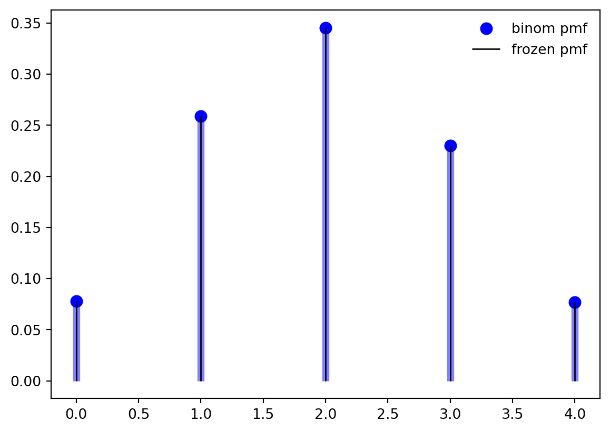

The Bernoulli distribution is the first distribution built on a binary outcome trial (e.g. a coin toss) where the parameter we consider is the probability of success \(p\). We will often represent the probability of failure by \(q=1-p\).
We will see how this simple idea can be extended to a large number of important discrete distributions, including
the Binomial distribution, which models the number of successes in a fixed number of independent Bernoulli trials, each with the same probability of success \(p\).
the Geometric distribution, which models the number of failures before the first success in a sequence of independent Bernoulli trials, each with the same probability of success \(p\).
the Negative Binomial distribution, which models the number of failures before a fixed number of successes in a sequence of independent Bernoulli trials, each with the same probability of success \(p\).
the Hypergeometric distribution, which models the number of successes in a fixed number of draws without replacement from a finite population containing a fixed number of successes.
the Multinomial distribution, which generalizes the Binomial distribution to more than two possible outcomes for each trial.
the Beta-Binomial distribution, which models the number of successes in a fixed number of independent Bernoulli trials, where the probability of success \(p\) is itself a random variable following a Beta distribution.
The Poisson distribution, which models the count of successes when we consider a limiting case where we have a large number of trials with a small probability of success where we keep their product constant.
The Exponential distribution, which models the time between events in a Poisson process.
The Normal distribution, which can be used to approximate the Binomial distribution under certain conditions (e.g., when the number of trials is large and the probability of success is not too close to 0 or 1).
We use the Bernoulli distribution to model a random variable for the probability of such a coin toss trial.
We use the Binomial distribution to model a random variable for the probability of getting k heads in N independent trails.
The Binomial distribution arises when we conduct multiple independent Bernoulli trials and wish to model \(X\) the number of successes in \(Y_i\mid \theta\) identically distributed Bernoulli trials with the same probability of success \(\theta\). If \(n\) independent Bernoulli trials are performed, each with the same success probability \(p\). The distribution of \(X\) is called the Binomial distribution with parameters \(n\) and \(p\). We write \(X \sim \text{Bin}(n, p)\) to mean that X has the Binomial distribution with parameters n and p, where n is a positive integer and \(0 < p < 1\).
Parameters
\(\theta\) - the probability of success in the Bernoulli trials
\(N\) - the total number of trials being conducted
Conditions
TipBinomial RV conditions
Discrete data
Two possible outcomes for each trial
Each trial is independent and
The probability of success/failure is the same in each trial
The outcome is the aggregate number of successes
Examples
to model the aggregate outcome of clinical drug trials,
to estimate the proportion of the population voting for each political party using exit poll data (where there are only two political parties).
The Binomial is a special case of the Multinomial distribution with K =2 (two categories).
the Poisson distribution distribution. If \(X \sim Binomial(n, p)\) rv and \(Y \sim Poisson(np)\) distribution then \(\mathbb{P}r(X = n) ≈ \mathbb{P}r(Y = n)\) for large \(n\) and small \(np\).
The Bernoulli distribution is a special case of the the Binomial distribution\[
\begin{aligned}
X & \sim \mathrm{Binomial}(n=1, p) \\
\implies X &\sim \mathrm{Bernoulli}(p)
\end{aligned}
\]
the Normal distribution If \(X \sim \mathrm{Binomial}(n, p)\) RV and \(Y \sim \mathcal{N}(\mu=np,\sigma=n\mathbb{P}r(1-p))\) then for integers j and k, \(\mathbb{P}r(j ≤ X ≤ k) ≈ \mathbb{P}r(j – 1/2 ≤ Y ≤ k + 1/2)\). The approximation is better when \(p ≈ 0.5\) and when n is large. For more information, see normal approximation to the Binomial
The Binomial is a limit of the Hypergeometric. The difference between a binomial distribution and a hypergeometric distribution is the difference between sampling with replacement and sampling without replacement. As the population size increases relative to the sample size, the difference becomes negligible. So If \(X \sim \mathrm{Binomial}(n, p)\) RV and \(Y \sim \mathrm{HyperGeometric}(N,a,b)\) then
\[\lim_{n\to \infty} X = Y
\]
Plots
import numpy as npfrom scipy.stats import binomimport matplotlib.pyplot as pltfig, ax = plt.subplots(1, 1)n, p =5, 0.4mean, var, skew, kurt = binom.stats(n, p, moments='mvsk')print(f'{mean=:1.2f}, {var=:1.2f}, {skew=:1.2f}, {kurt=:1.2f}')x = np.arange(binom.ppf(0.01, n, p), binom.ppf(0.99, n, p))ax.plot(x, binom.pmf(x, n, p), 'bo', ms=8, label='binom pmf')ax.vlines(x, 0, binom.pmf(x, n, p), colors='b', lw=5, alpha=0.5)rv = binom(n, p)ax.vlines(x, 0, rv.pmf(x), colors='k', linestyles='-', lw=1, label='frozen pmf')ax.legend(loc='best', frameon=False)plt.show()## generate random numbersr = binom.rvs(n, p, size=10)r
mean=2.00, var=1.20, skew=0.18, kurt=-0.37

array([1, 1, 4, 2, 1, 1, 2, 1, 2, 4])
#| label: fig-binomial-interactivefrom __future__ import print_functionfrom ipywidgets import interact, interactive, fixed, interact_manualimport ipywidgets as widgetsimport numpy as npimport scipyfrom scipy.special import gamma, factorial, combimport plotly.express as pximport plotly.offline as pyoimport plotly.graph_objs as go#pyo.init_notebook_mode()INTERACT_FLAG=Falsedef binomial_vector_over_y(theta, n): total_events = n y = np.linspace(0, total_events , total_events +1) p_y = [comb(int(total_events), int(yelem)) * theta** yelem * (1- theta)**(total_events - yelem) for yelem in y] fig = px.line(x=y, y=p_y, color_discrete_sequence=["steelblue"], height=600, width=800, title=" Binomial distribution for theta = %lf, n = %d"%(theta, n)) fig.data[0].line['width'] =4 fig.layout.xaxis.title.text ="y" fig.layout.yaxis.title.text ="P(y)" fig.show()if(INTERACT_FLAG): interact(binomial_vector_over_y, theta=0.5, n=15)else: binomial_vector_over_y(theta=0.5, n=10)